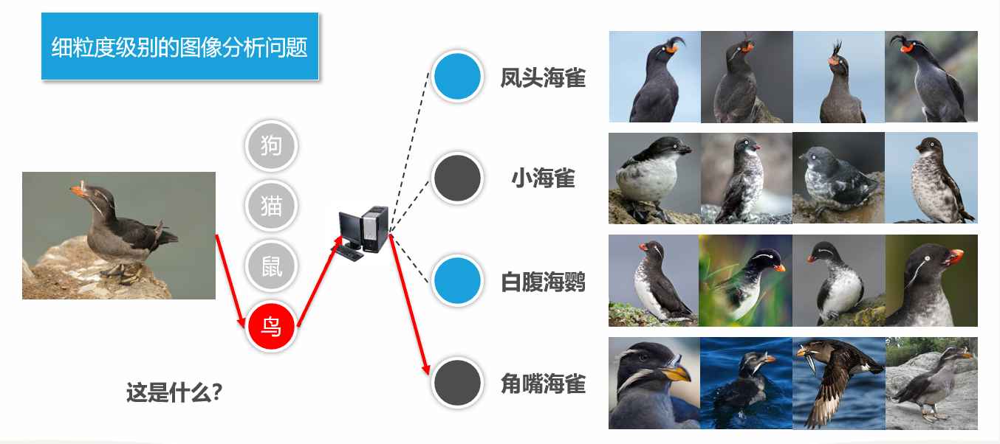
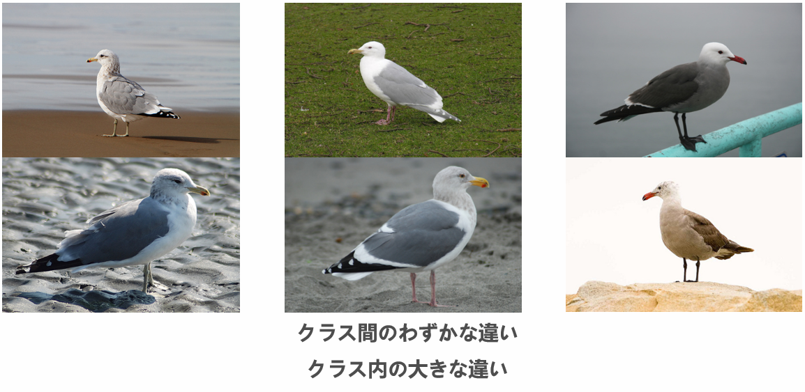
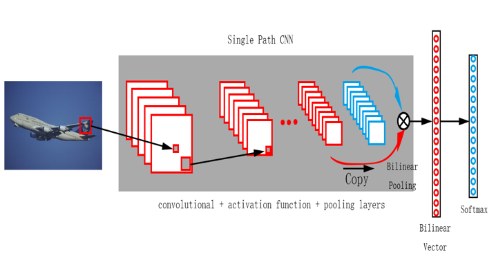
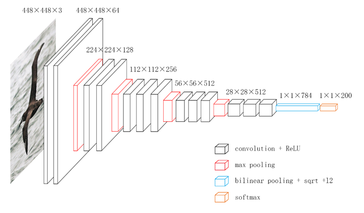
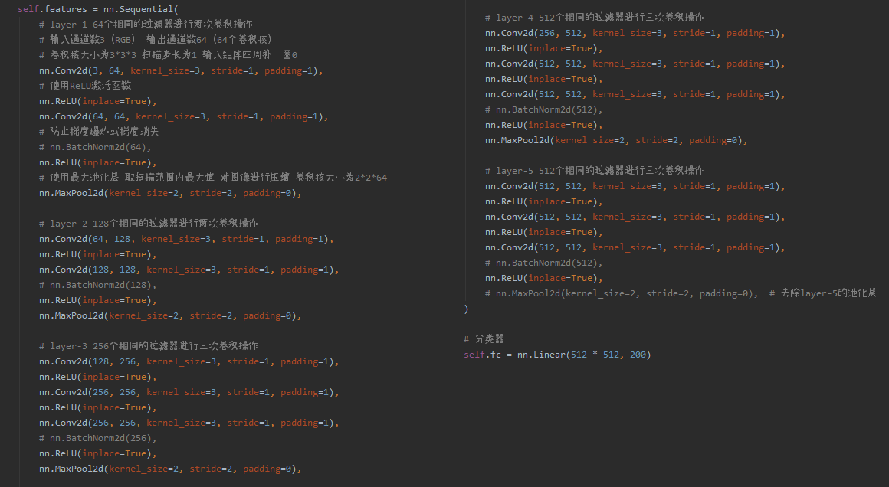
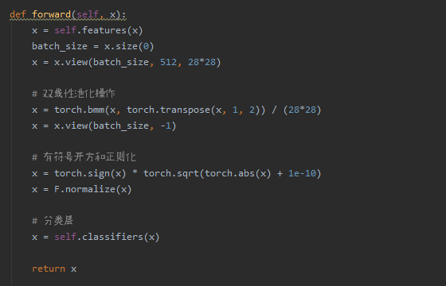
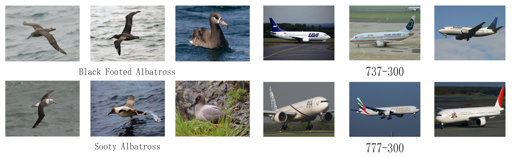
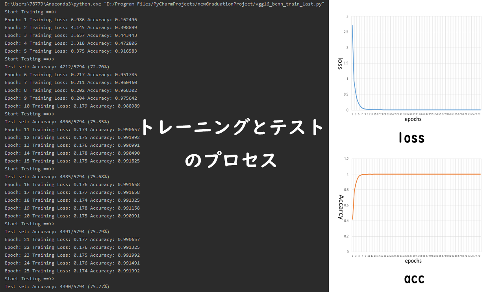
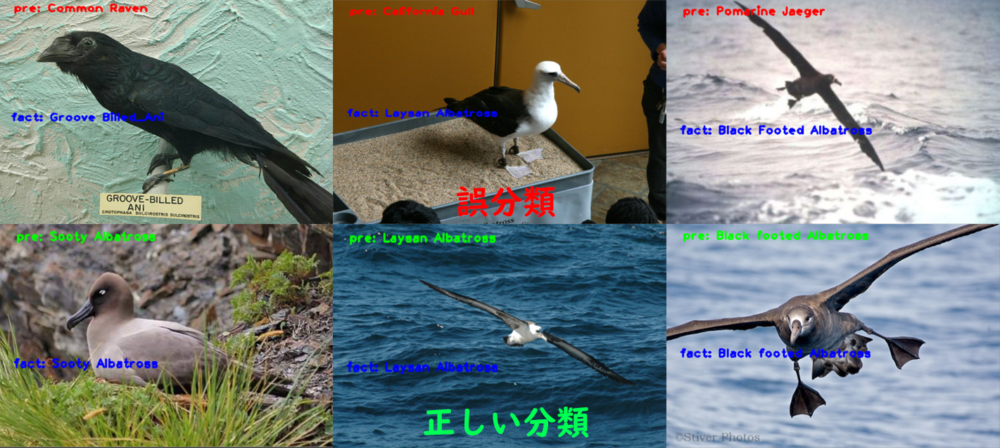

1.前言
このプロジェクトは私の卒業論文のテーマとして完成しました。深層学習畳み込みニューラルネットワークを使用して、画像の特徴を正確に抽出し、さまざまなクラスに属するオブジェクトを効果的に分類する。このプロジェクトは深圳大学コンピュータとソフトウェア学院の2020年度優秀卒業論文選考に選ばれ、最終的に優秀論文(A+)が得られなかったのは残念でしたが、審査員からも高く評価されました(A)。
2.きめ細かい画像分類
きめの細かい画像分類、この研究目標は、同じオブジェクトのさまざまなサブカテゴリに対してより詳細な分類を実行することです。たとえば、鳥が含まれている画像の場合、従来の粗視化画像分類では「鳥」カテゴリにのみ分類されます。きめの細かい画像分類には、この画像の鳥の特徴に基づいて、鳥を「クロアホウドリ」、「小さなツノメドリ」、または「灰色の翼のカモメ」に細分する必要があります。または、写真の車のロゴ、ライト、ボディなどの特徴に基づく単純な車の商標の代わりに、「BMW X1」、「Audi A4L」、および「Benz GLB」の特定のモデルを取得できます。

サブクラスではクラス間のわずかな違いとクラス内の大きな違いがあるため、きめ細かい画像の分類と認識は、従来の画像分析タスクよりも困難です。ただし、難易度が高いと、それに応じた高いメリットがもたらされます。たとえば、鳥や花などの生物学的対象をきめ細かく識別すると、専門家の助けがなくても、種の分類と識別を迅速かつ正確に完了できます。これは動物や植物の保護を大切にするのに役立ちます。車両のきめ細かい識別は、車両の検出と認識の効果を向上させ、類似の車両の誤判定率を減らし、正確な追跡を実現し、高度道路交通システムの開発を加速します。実生活におけるきめ細かい画像分析タスクの大きな可能性により、この研究に参加する学者がますます増えているため、近年、コンピュータビジョン研究において非常に人気があり、重要な研究トピックの1つになっています。

3.方法とモデル
私が設計して提案したネットワークモデルは、Linらのネットワークモデルの改良に基づいています。その名前は、単ーパスバイリニアプーリング畳み込みニューラルネットワーク（Single Path Bilinear Pooling-Convolutional Neural Networks,SPBP-CNN）。

このモデルは、たった1つの畳み込みニューラルネットワークを使用して特徴を抽出し、抽出した特徴ベクトルをコピーして、2つの特徴ベクトルに対して外積演算を実行します。これは、いわゆるバイリニアプーリングです。これにより、ネットワークスペースを大幅に節約し、パラメーターの数を減らすことができます。次に、取得したバイリニア特徴が合計プーリングによって融合し、モデルとパラメータを特定の方法で最適化します。最後に、Softmaxレイヤーに入ると、モデルまたはテスト結果をトレーニングできます。

これは、SPBP-CNNモデルのネットワーク構造図です。有名なVGG-16畳み込みニューラルネットワークを模倣しました。
ネットワークを構築するためのプロセスコードは以下の通りです:

2 Convolutional layers → 1 Max-pooling layer → 2 Convolutional layers →
1 Max-pooling layer → 3 Convolutional layers → 1 Max-pooling layer →
3 Convolutional layers → 1 Max-pooling layer → 3 Convolutional layers
最初に、448×448×3スケールの画像を畳み込みおよびプーリング操作にかけ、28×28×512スケールの特徴ベクトルを取得します。

次に、特徴ベクトルをコピーし、pytorchのtranspose関数を使用して次元を交換し、2つの特徴行列に対して外積演算（bmm関数）を実行して、バイリニ特徴ベクトルを取得します。そして、平方根と正則化の後、モデルが最適化され、最終的に1×1×784スケールの融合特徴ベクトルが取得されます。最後に、softmax分類層に入力して、トレーニングまたはテストを完了します。
4.実験結果
このネットワークモデルとコードの有効性を確認するために、私はテスト用に2つの公開されているきめ細かい画像データセットを選択しました。鳥のデータセット（CUB-200-2011）と飛行機のデータセット（FGVC-Aircraft）。

CUB-200-2011鳥のデータセットには、トレーニング画像5994枚とテスト画像5794枚を含む、合計200種類の鳥が含まれています。FGVC-Aircraft飛行機のデータセットには、トレーニング画像6667枚とテスト画像3333枚を含む、合計200種類の鳥が含まれています。テスト基準：正しい予測の数 / テストサンプルの総数 × 100%。


最後に、鳥のデータセットで84.38％の正解率、飛行機のデータセットで84.13%の正解率が得られました。このメソッドのコアは、バイリニアプーリング操作の使用です。まだ、バイリニアプーリングの有効性を検証するために、アブレーション実験も設計しました。